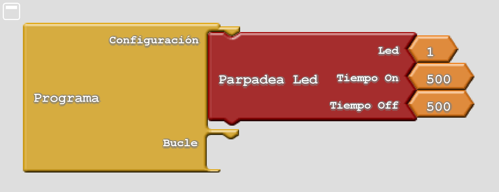

4. LED flashing¶

Goals¶
- Generate led blinking using the ledBlink function.
The ledBlink() function¶
-
ledBlink(int ledNum, int time_on, int time_off)¶ This function makes a led blink with a determined cadence. Its parameters are the following:
ledNum: led that will blink. Valid values range from 1 for led D1 to 8 for the blue color of led D6.The D6 led is an RGB led, which integrates 3 leds inside. The numbers 6, 7, 8 respectively represent the red, green and blue colors of led D6.
time_on: time, in thousandths of a second, that the led should stay on. If this parameter is zero, the led will remain on all the time.time_off: time, in thousandths of a second, that the led should remain off.Note
Every time the
ledBlink()function is executed, the led begins the cycle by turning on fortime_on. This can be used to synchronize the beginning of the blinking of a led. If the functionledBlink()is executed repeatedly every so often, the led will stay on all the time, since its on time is reset over and over again.
LED D1 flashing¶
In this example, you want to make led D1 blink with a half second on time and half a second off time. The flashing period will therefore be one second. In this case the function will be given from the setup() block only once.
1 2 3 4 5 6 7 8 9 10 11 12 13 14 | // Parpadea el led D1 una vez por segundo
#include <Wire.h>
#include <PC42.h>
void setup() {
pc.begin(); // Inicializar el módulo PC42
pc.ledBlink(1, 500, 500); // Parpadea el led D1
// 500 milésimas de segundo encendido
// 500 milésimas de segundo apagado
}
void loop() {
}
|
Equivalent program in the Ardublock environment:
{kind=link}
In this link you can download the program file for Ardublock environment 'ledBlink'
Exercises¶
Program the code needed to solve the following problems.
Make led D1 and led D4 blink with a half second on time and half a second off time. The two LEDs must turn on and off at the same time. Use the
ledBlink()function.Modify the previous exercise so that the lighting of the two leds D1 and D4 alternates, so that only one led is on at any time. The lighting time of each led will be half a second.
Make two LEDs blink at the same time with a frequency of one second. LED D1 will be programmed with the function
ledBlink(1, 500, 500), on the contrary, led D3 will be programmed with the following code.1 2 3 4 5 6
void loop() { pc.ledWrite(3, LED_ON); // Encender el led D3 delay(500); // Esperar medio segundo (500 ms) pc.ledWrite(3, LED_OFF); // Apagar el led D3 delay(500); // Esperar medio segundo (500 ms) }
You should try to synchronize the two leds so that they blink at the same time by adjusting the lighting times by modifying the time of the
delay(500)function.Correct the syntax errors in the following program to make it work correctly.
1 2 3 4 5 6 7 8 9 10 11 12 13 14 15 16 17 18 19 20 21 22 23 24 25 26 27 28
// Programa con errores sintácticos. // Luces de Navidad. #include <Wire.h> #include <PC42.h> void setup() { int time_on; // Declara la variable time_on como un número entero int time_off; // Declara la variable time_off como un número entero pc.begin(); // Inicializar el módulo PC42 // Repite y asigna valores a variable 'num' desde 1 hasta 5 for(int num=1; num<=5; num++) { // Tiempo encendido = aleatorio entre 0,5 y 3,0 segundos time_on = random(500, 3000) // Tiempo apagado = aleatorio entre 0,5 y 3,0 segundos time_off = Random(500, 3000) // Parpadea el led 'num' un tiempo aleatorio pc.ledblink(num, time_on, time_off) } void loop() { }
Make a led blink so that it lights up for two tenths of a second every ten seconds, to indicate that the module is working using very little energy.
Make a led blink so that it lights up for two tenths of a second, every second.
The first six leds must light up in sequence so that led D1 begins to light up and ends up with led D6. Between the lighting of one LED and the next, between 250 and 500 thousandths of a second must pass. Once all the leds are on, they will start to turn off by led D1 until they are all off. Note: To solve this problem, only one
ledBlink()function should be used for each led, along with a delay() function to wait a time between one power on and the next.